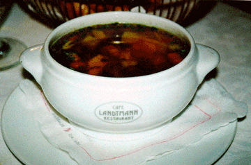

Click HERE to register your comments......or improve the recipe.Or do you want to take another look at the homepage MENU?
Or do you want to SEARCH for something specific?
Or do you want to take another look at the homepage MENU?
Or do you want to SEARCH for something specific?
Landtmann's Soup Pot
(Vienna, Austria)
Yes, it's a wonderful soup--and with a pretty silly personal story behind it (see below). The preliminary work is a bit labor intensive, but the final product is worth it. Serve hot as a first course or a light meal to 4, ideally in white thick-footed crock bowls with nubby handles, as shown.
SoupTale: A reader had written asking for the recipe of wonderful soup served at the famous Cafe Landtmann in Vienna. Despite my best efforts, I was not able to locate it. Months passed, I'd forgotten the request, then, at the tail end of a holiday through Hungary, I had one afternoon in Vienna before flying home. It was a beautiful day. My colleague Maggie Owens and I were walking the Ringstrasse when I looked up...and saw the landmark Landtmann's directly in front of me. Clearly fate had taken a hand. We sat down in its lovely cafe, were approached by the efficient and good looking Herr Henry, and put in an order for two beers and one piece of information. He said he would take care of the two beers immediately and come back for the information. And he did. I honestly couldn't remember what soup my reader had requested, but when Herr Henry described the famous Vienna Soup Pot as being chunky--well, that rang a bell. I was sure I had my soup. Herr Henry produced a bowl for us to sample, told us how to make it, and commented that it was a particular favorite of visiting Japanese and other Asian tourists because of its purity and visual appeal--"satisfying, not too filling." Maggie gets photo credit for the picture. All's well that ends well? Well, not quite. I'd gotten the soup wrong. It was Beet Cream Soup, not Vienna Soup Pot. My reader had stipulated that it was "not chunky"--and "chunky," of course, is precisely what stuck in my mind.
PREPARING THE SOUP COMPONENTS:
- 2 medium carrots, diced into small regular cubes
- 1/2 celery root, diced, likewise, into small regular cubes
- 1 medium potato, diced into same small cubes
- soup noodles (or spaghetti, broken into 2-inch pieces), to fill one cup
- 1 large chicken breast, dredged in seasoned flour
- deep frying oil
- 8 cups clear beef stock
- 1/2 cup cubed boiled beef
Garnish: minced parsley, stirred in at the end
ASSEMBLING THE SOUP: When ready to serve, bring the stock to a boil. Stir in the vegetables, chicken chunks, and beef and let simmer 5 minutes to heat through. Stir in the noodles and cook another couple minutes. Finally, stir in the parsley. Ladle into bowls and serve immediately.
My sincere thanks to Herr Henry for his graciousness, patience, and care in explaining the recipe. (Now, could you help with the Beet Cream recipe too??!)